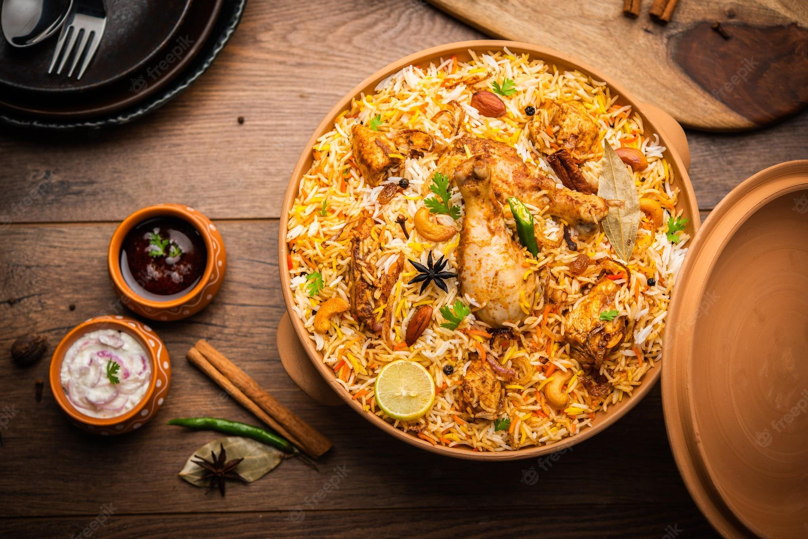

Our Bangladeshi Recipes

Chicken Biryani
Ingredients
- 500g chicken, cut into pieces
- 2 cups basmati rice, soaked
- 2 onions, sliced
- 2 tbsp ghee
- 1 tsp cumin seeds
- 4 cloves garlic, minced
- 2-inch ginger, grated
- 2 tomatoes, chopped
- 1 cup yogurt
- 2 tsp biryani masala
- Salt to taste
Steps
- Marinate chicken with yogurt, biryani masala, and salt for 30 minutes.
- Heat ghee, fry onions until golden, add cumin, garlic, and ginger.
- Add tomatoes, cook until soft, then add chicken. Cook for 10 minutes.
- Layer soaked rice over chicken, add 3 cups water, cover, and cook on low for 20 minutes.
- Fluff rice and serve hot with raita.

Bhuna Khichuri
Ingredients
- 1 cup moong dal
- 1 cup basmati rice
- 1 onion, sliced
- 1 tsp turmeric
- 1 tsp cumin seeds
- 2 tbsp ghee
- 4 cups water
- Salt to taste
Steps
- Roast moong dal until golden, rinse with rice.
- Heat ghee, add cumin seeds and onion, fry until brown.
- Add turmeric, dal, rice, salt, and water.
- Cook on medium heat for 20 minutes, stirring occasionally.
- Serve with fried onions and pickle.
Fuchka
Ingredients
- 20 puris (store-bought)
- 1 cup boiled chickpeas
- 1 potato, boiled and mashed
- 1 tsp roasted cumin powder
- 1 tsp chaat masala
- 2 cups tamarind water
- Chopped coriander
Steps
- Mix chickpeas, potato, cumin, chaat masala, and salt.
- Poke a hole in each puri, fill with chickpea mixture.
- Pour tamarind water into each puri.
- Garnish with coriander and serve immediately.